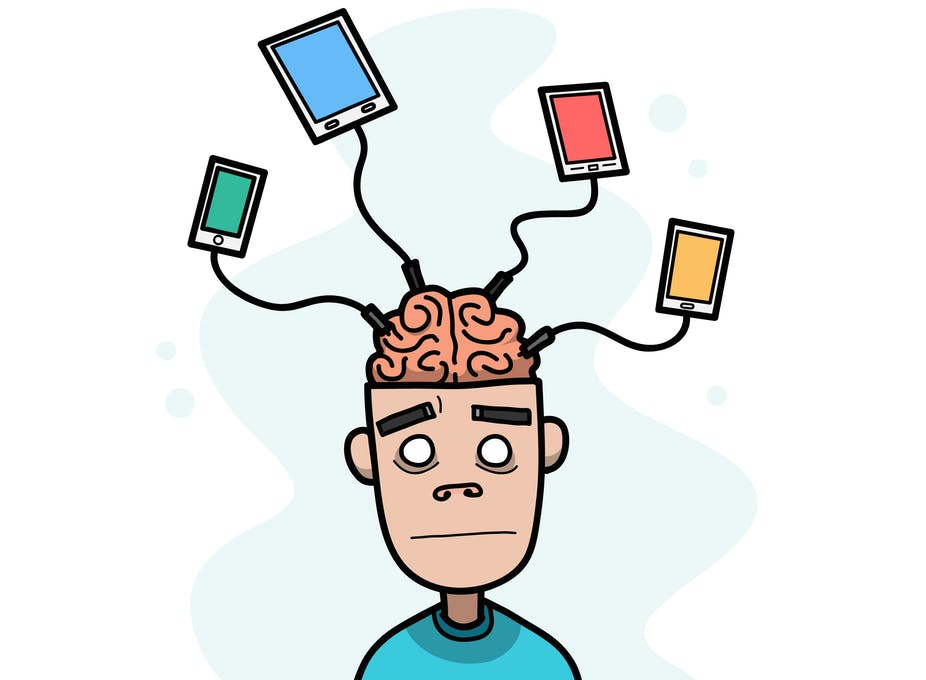

What's Behind Phantom Cellphone Buzzes?
Daniel J. Kruger
Copyright. The Conversation
1 Have you ever experienced a phantom phone call or text? You're convinced that you felt your phone vibrate in your pocket, or that you heard your ringtone. But when you check your phone, no one actually tried to get in touch with you.
2 You then might plausibly wonder: "Is my phone acting up, or is it me?"
3 Well, it's probably you, and it could be a sign of just how attached you've become to your phone.
4 At least you're not alone. Over 80% of college students we surveyed have experienced it. However, if it's happening a lot—more than once a day—it could be a sign that you're psychologically dependent on your cellphone.
5 There's no question that cellphones are part of the social fabric in many parts of the world, and some people spend hours each day on their phones. Our research team recently found that most people will fill their downtime by fiddling with their phones. Others even do so in the middle of a conversation. And most people will check their phones within 10 seconds of getting in line for coffee or arriving at a destination.
6 Clinicians and researchers still debate whether excessive use of cellphones or other technology can constitute an addiction. It wasn't included in the latest update to the DSM-5, the American Psychiatric Association's definitive guide for classifying and diagnosing mental disorders.
7 But given the ongoing debate, we decided to see if phantom buzzes and rings could shed some light on the issue.
8 A virtual drug?
Addictions are pathological conditions in which people compulsively seek rewarding stimuli, despite the negative consequences. We often hear reports about how cellphone use can be problematic for relationships and for developing effective social skills.
9 One of the features of addictions is that people become hypersensitive to cues related to the rewards they are craving. Whatever the cue is, people start to see it everywhere. (I had a college roommate who once thought that he saw a bee's nest made out of cigarette butts hanging from the ceiling.)
10 So might people who crave the messages and notifications from their virtual social worlds do the same? Would they mistakenly interpret something they hear as a ringtone, their phone rubbing in their pocket as a vibrating alert or even think they see a notification on their phone screen—when, in reality, nothing is there?
11 A human malfunction
We decided to find out. From a tested survey measure of problematic cellphone use, we pulled out items assessing psychological cellphone dependency. We also created questions about the frequency of experiencing phantom ringing, vibrations and notifications. We then conducted an online survey to over 750 undergraduate students.
12 Those who scored higher on cellphone dependency—they more often used their phones to make themselves feel better, became irritable when they couldn't use their phones and thought about using their phone when they weren't on it—had more frequent phantom phone experiences.
13 Cellphone manufacturers and phone service providers have assured us that phantom phone experiences are not a problem with the technology. As HAL 9000 might say, they are a product of "human error".
14 So where, exactly, have we erred? We are in a brave new world of virtual socialization, and the psychological and social sciences can barely keep up with advances in the technology.
15 Phantom phone experiences may seem like a relatively small concern in our electronically connected age. But they raise the specter of how reliant we are on our phones—and how much influence phones have in our social lives.
16 How can we navigate the use of cellphones to maximize the benefits and minimize the hazards, whether it's improving our own mental health or honing our live social skills? What other new technologies will change how we interact with others?
17 Our minds will continue to buzz with anticipation.
(635 words)